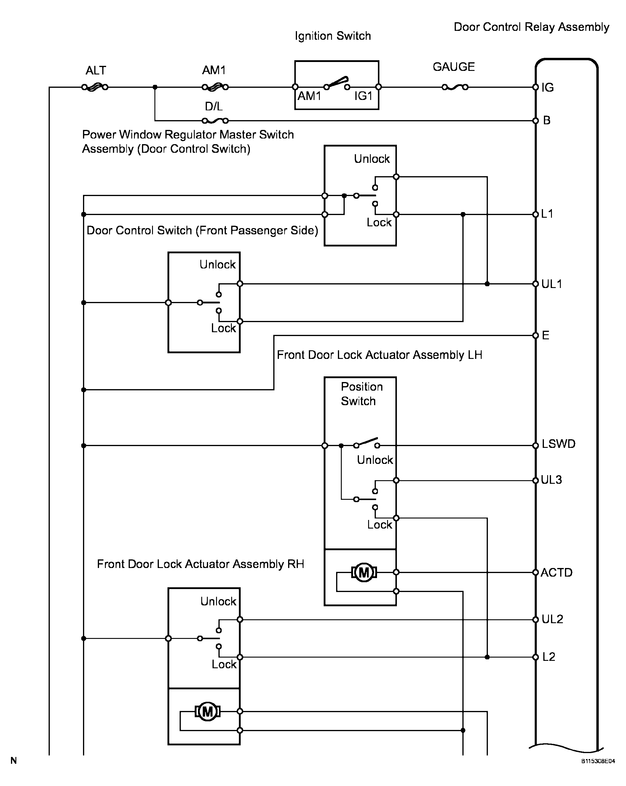
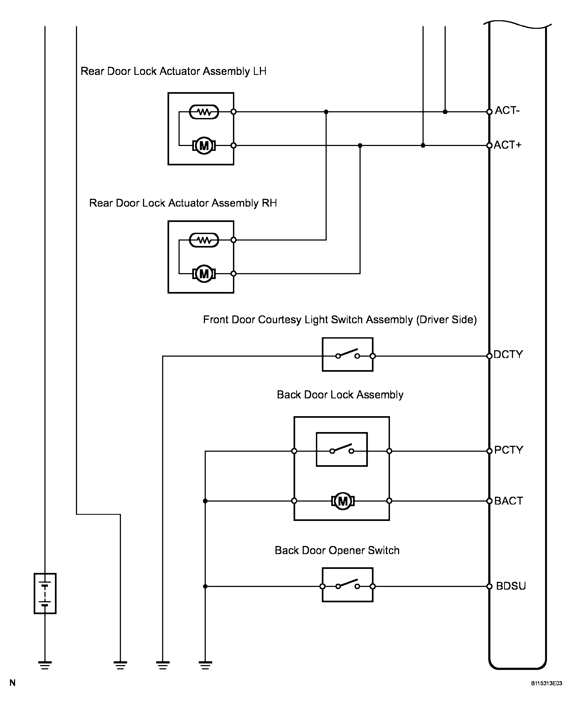

All Doors cannot be Locked / Unlocked Simultaneously: Wiring Diagram
Fig 1: Power Door Lock Control System - Wiring Diagram (1 Of 2)

Courtesy of © TOYOTA, LICENSE AGREEMENT TMS1002
Fig 2: Power Door Lock Control System - Wiring Diagram (2 Of 2)

Courtesy of © TOYOTA, LICENSE AGREEMENT TMS1002